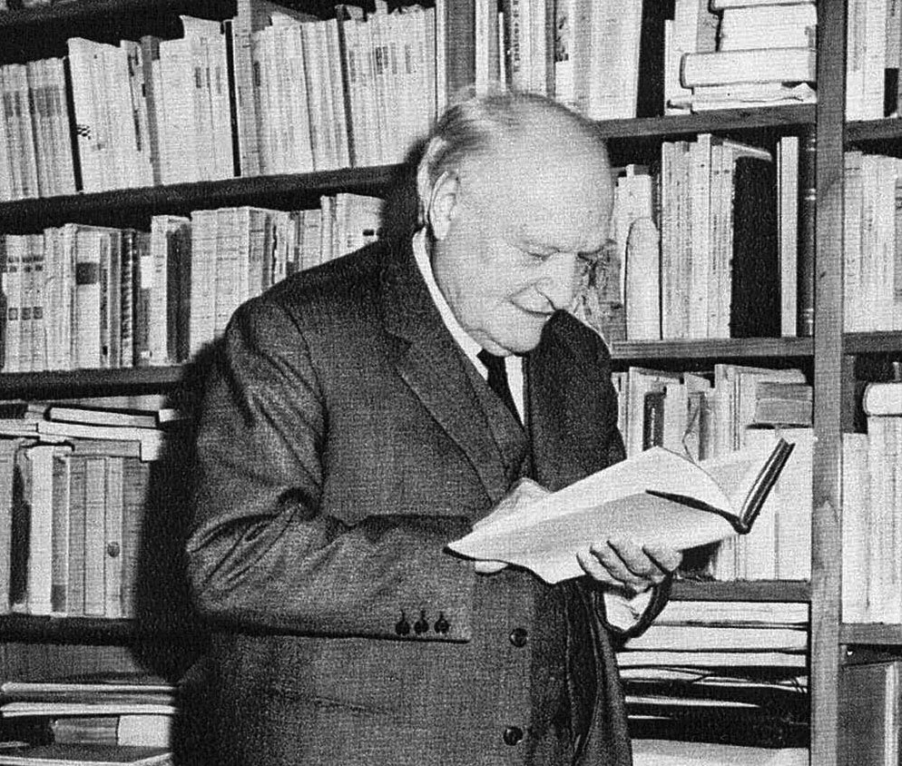
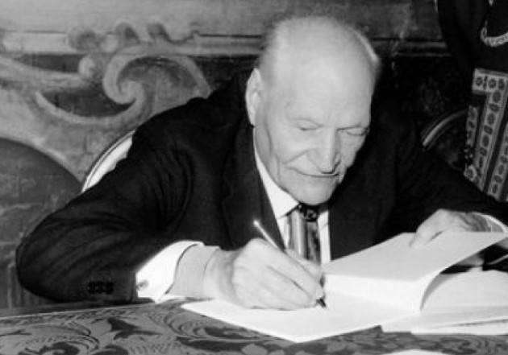
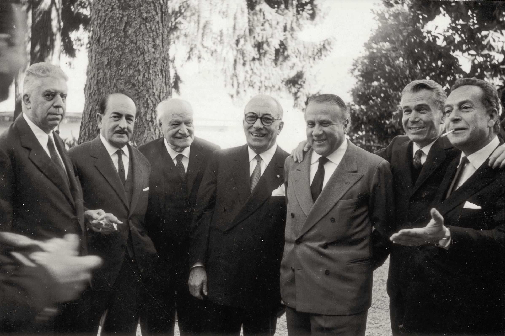
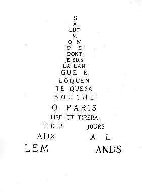

Biografia

Nel 1915, poco dopo aver pubblicato le sue prime poesie, è chiamato in guerra come soldato semplice: combatte prima sul Carso e poi, nel 1918 sul fronte francese. Nel 1916 è intanto uscito, in ottanta copie, il primo libro:Il porto Sepolto(una riedizione del 1923 porta la prefazione di Mussolini,testimonianza dell'adesione di Ungaretti al fascismo, inteso come movimento rivoluzionario e rigenerativo).
Nel 1919, finita la guerra, pubblica per impulso di Papini, Allegria di naufragi presso Vallecchi, che raccoglie anche le poesie del Porto Sepolto; dall'edizione del 1931 il titolo verrà cambiato in L’Allegria.
Dal 1918 al 1921, vive ancora a Parigi dove nel 1920 sposa Jeanne Dupoix, che morirà nel 1958, dalla quale avrai i figli Ninon, nata nel 1925 e Antonietto nato nel 1930. Quest'ultimo morirà nel 1939 ispirando le poesie di Il dolore (1947). Dal 1921 vive a Roma, lavorando per lo più come giornalista (frequenti, soprattutto tra il 1931 e il 1933, i viaggi all'estero come inviato speciale). Nel 1933 esce Sentimento del tempo. 
Dal 1937 al 1942 vive a San Paolo del Brasile, dove insegna Lingua e letteratura italiana all'università. Tornato in Italia nel 1942, eletto accademico d'Italia e nominato professore di Letteratura italiana contemporanea all'Università di Roma riceve, soprattutto a partire dagli anni ’50, numerosi riconoscimenti e lauree honoris causa da varie università italiane e straniere.
Escono altre opere tra le quali La Terra Promessa (1950) e il Taccuino del vecchio (1960).
Fin dal 1942 l'editore Mondadori ripubblica le opere ungarettiane sotto il titolo complessivo di Vita d’un uomo . La morte lo coglie a Milano la notte tra l'1 e il 2 giugno 1970 all'età di 82 anni, ai funerali non partecipò nessuna rappresentanza ufficiale del governo italiano.
L'importanza storica di Ungaretti non si lega soltanto al valore artistico dei suoi risultati, che pure lo collocano tra i primissimi poeti del Novecento, ma dipende anche dall'influenza esercitata sulle esperienze letterarie successive. Tale influenza è stata profonda ma anche contraddittoria. Al suo esordio, negli anni Dieci, l'opera di Ungaretti si presenta assai originale e rivoluzionaria; e tuttavia la sua evoluzione in senso classico e tradizionalista a partire dagli anni Venti ha favorito e accompagnato il prevalere di tendenze restauratrici e regressive tra gli anni Venti e Quaranta.
Il percorso della ricerca ungarettiana si presenta dunque fortemente legato alla stagione avanguardistica negli anni Dieci e alla crisi delle avanguardie, con il conseguente ritorno all'ordine, dopo il 1920. La formazione culturale di Ungaretti risente del contatto con diversi ambienti negli anni della giovinezza: ad Alessandria d’Egitto frequenta «la baracca rossa» di Pea, subendo la suggestione del sovversivismo anarchico; a Parigi entra in contatto con le avanguardie, stringendo amicizia con Apollinaire; in Italia pubblica numerosi testi sulla rivista futurista «Lacerba» risentendo del clima a essa legato.
All'interesse per la poesia francese contemporanea, fra Simbolismo e Avanguardia, si unisce d'altra parte un'attenzione costante alla grande tradizione italiana, incentrata soprattutto su un Leopardi letto in chiave classicistica e un Petrarca considerato quale insuperabile modello di innocenza e di autenticità espressiva. Ben presto anche alcuni grandi esempi della grandiosa poesia barocca, da Shakespeare a Góngora, entrano a far parte delle sue frequentazioni, non senza alcune brillanti prove in veste di traduttore.
Le due componenti della formazione di Ungaretti, quella classicistico-simbolista e quella avanguardistica, corrispondono ai due poli delle sue personalità: da una parte c'è la ricerca di equilibrio, di innocenza di armonia, di rasserenamento e dall'altra, il bisogno implacabile di trasgressione, di peccato, di tensione e di turbamento. Nella prima fase della scrittura ungarettiana, confluita poi nella raccolta L’'Allegria, il punto di equilibrio è cercato dentro un paesaggio stilistico e formale, segnato in senso espressionistico e rivoluzionario.
La frantumazione della metrica e della sintassi, la quasi sparizione della punteggiatura e l'analogia sono i caratteri cospicui di questa prima stagione. Nella seconda fase, inaugurata con Sentimento del tempo, si impone invece un taglio classicistico e armonioso, con il recupero della metrica tradizionale e di forme stilistiche ed espressive assai meno estreme. Vi è, tuttavia, una costante di poetica che colloca i due momenti, ed è il culto della parola.
La parola è caricata del massimo di tensione espressiva (ed anche espressionistica), al fine di sollecitare il potenziale di rivelazione. Si esprime così la fiducia nel potere della poesia quale rivelazione della verità per mezzo della ricerca sulle parole.
L'ideale poetico ungarettiano è concepito quale magico incontro di mestiere, di ispirazione e di abilità tecnico-compositive, di autenticità, lirica la poesia è considerata quale unico tramite di comunicazione tra storia assoluto tra individuo e collettività tra particolare e universale, tra fenomeno e significato.